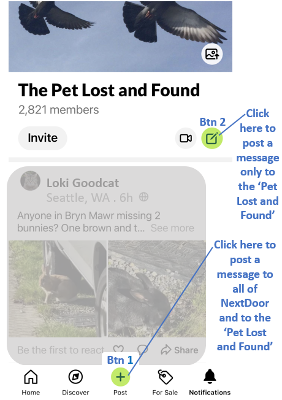

Create a Missing Pet Post using Nextdoor's Mobile Application
These instructions apply only to posts created on Nextdoor using a mobile phone.
There are two ways to post your message. You can post only to the Pet Lost and Found (PLF). Or, you can post to PLF plus to the wider NextDoor audience.
The best way to reach the widest audience on Nextdoor is to use the green "Post" button (Btn 1) which is located at the bottom of the Pet Lost and Found page as shown below. Don't use the other green posting icon, (Btn 2), which is located towards the top of the page unless a more limited audience view is the goal.

After clicking the Post button (Btn 1),
you are taken to a page to enter the text of your post along with any
images. Then, the "Post to your feed" page is diplayed where you will make
both selections #1 and #2 shown below.

Your post will be seen by anyone on Nextdoor.